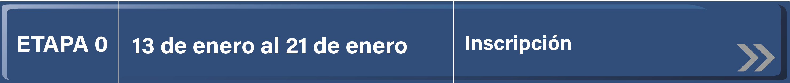
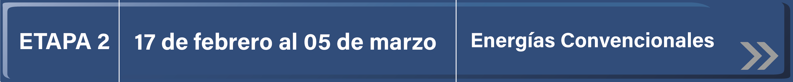
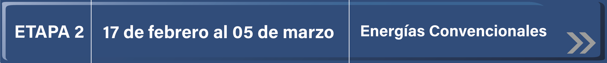
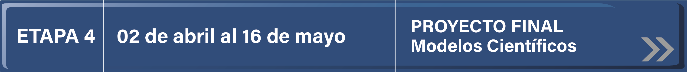
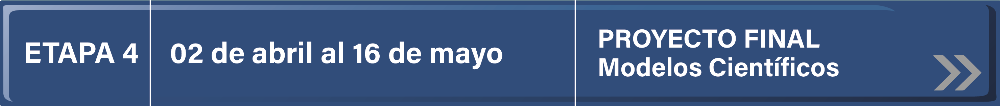

Inicio
El profesor de grupo tendrá participación activa en el proceso de los alumnos observando, analizando, reflexionando, tomando notas, como facilitador y guía de sus alumnos.
Este trabajo inicia desde el momento en que el profesor motiva a los alumnos para participar en el proyecto.
- Observará la participación de los alumnos en el desarrollo de las actividades.
- Tomará nota de lo que observe.
- Analizará y reflexionará sobre lo que escribió durante el transcurso de las actividades en cada etapa del proyecto.
Los alumnos escribirán un ensayo donde expresen lo observado y analizado (observaciones y conclusiones sobre el trabajo realizado con el proyecto colaborativo).
Sugerencias de Evaluación.
La evaluación la realizará el profesor y los propios alumnos tomando en cuenta:
- Los productos elaborados como resultado de las actividades correspondientes a cada etapa o fase del proyecto.
- La participación en acciones tanto de expresión oral como escrita, actividades artísticas, cumplimiento de tiempos, integración y colaboración en equipos y grupal.
- La elaboración de un ensayo por equipo.
- La presentación de un periódico mural elaborado por los alumnos.
- Las representaciones artísticas relacionadas con la temática (teatro, canto, entre otras).
Inicio
El profesor de grupo tendrá participación activa en el proceso de los alumnos observando, analizando, reflexionando, tomando notas, como facilitador y guía de sus alumnos.
Este trabajo inicia desde el momento en que el profesor motiva a los alumnos para participar en el proyecto.
- Observará la participación de los alumnos en el desarrollo de las actividades.
- Tomará nota de lo que observe.
- Analizará y reflexionará sobre lo que escribió durante el transcurso de las actividades en cada etapa del proyecto.
Los alumnos escribirán un ensayo donde expresen lo observado y analizado (observaciones y conclusiones sobre el trabajo realizado con el proyecto colaborativo).
Sugerencias de Evaluación.
La evaluación la realizará el profesor y los propios alumnos tomando en cuenta:
- Los productos elaborados como resultado de las actividades correspondientes a cada etapa o fase del proyecto.
- La participación en acciones tanto de expresión oral como escrita, actividades artísticas, cumplimiento de tiempos, integración y colaboración en equipos y grupal.
- La elaboración de un ensayo por equipo.
- La presentación de un periódico mural elaborado por los alumnos.
- Las representaciones artísticas relacionadas con la temática (teatro, canto, entre otras).
Presentación
El proyecto "Nuestro cuerpo cambia", está dirigido a niños de quinto y sexto de primaria en la asignatura de ciencias naturales y a alumnos de secundaria en la asignatura de Cívica y Ética, Español, Biología y Química.
Las actividades sugeridas en este proyecto permitirán a los participantes realizar acciones que los lleven a conocer la sexualidad y su responsabilidad para ejercerla según sus derechos.
En los grados de quinto y sexto los alumnos encontrarán un espacio virtual en el que podrán plantear sus dudas, hacer comentarios o simplemente escucharse y compartir ideas, percibiendo la sexualidad desde el punto de vista humanista, social y de los valores.
Los alumnos de secundaria encontrarán en este proyecto el camino hacia el conocimiento del cuerpo humano, sus cambios y sus derechos, interrelacionados con la sexualidad, métodos anticonceptivos y infecciones de transmisión sexual, brindándoles la oportunidad de informarse y resolver algunas de sus dudas, así como valorar la importancia de un cuerpo sano y saludable.
Invitamos a los alumnos de primaria y secundaria a conocer su sexualidad con seriedad y responsabilidad y a compartir su sentir y saber con otros, participando en las actividades que este proyecto les ofrece.
Actividades
"Nuestro Cuerpo Cambia" es un proyecto que consta de cinco etapas donde se sugieren actividades, lecturas, investigación en documentos, videos y páginas de Internet que han sido seleccionadas de acuerdo a las necesidades de los alumnos de 5º y 6º de primaria y primero, segundo y tercer grado de secundaria.
Para inscribirse los participantes eligen un nombre que los distinguirá de los demás. Al interior del grupo los docentes organizan equipos de 5 integrantes para realizar las actividades que se sugieren en cada etapa, mismas que les permitirán realizar el intercambio con compañeros distantes.
Para iniciar las actividades se sugiere conocer las características del proyecto con el objetivo de comprender la responsabilidad que adquieren para el desarrollo del mismo.
Se incluyen actividades interactivas en las que podrán reforzar el conocimiento adquirido a través de las distintas etapas del proyecto.
El intercambio se hará a través de foros de discusión, en el que los alumnos darán a conocer sus reflexiones, hallazgos y aprendizajes convirtiendo el uso de la tecnología en el aula en una herramienta para la investigación, el intercambio y la interacción entre profesores y alumnos.
El desarrollo del proyecto es guiado por el maestro del grupo en coordinación con el responsable tecnológico escolar. Se sugiere que a cada aportación en los foros le anexen los siguientes datos:
- Nombre del equipo
- Nombre de la escuela
- Entidad
- Clave de Centro de Trabajo (CCT)
Además, para que los foros sean fluidos es importante tomar en cuenta los requisitos que se enumeran a continuación:
- Los mensajes deben cumplir con las reglas ortográficas y de redacción revisadas previamente por su profesor.
- Los comentarios y opiniones de participación se harán con estricto apego al respeto como un valor importante para la realización de dichas actividades.
- En caso de que las aportaciones de los equipos de un grupo sean iguales, deberán enviar un solo mensaje en forma grupal, con el objetivo de enriquecer el foro y no saturar.
- Participar tomando en cuenta las preguntas generadoras del foro.
Ubicación curricular
CIENCIAS Y TECNOLOGÍA. BIOLOGÍA.
SECUNDARIA. 1º
Eje.
Sistemas
Tema.
Sistemas del cuerpo humano y salud
Aprendizaje esperado.
Argumenta los beneficios de aplazar el inicio de las relaciones sexuales y de practicar una sexualidad responsable, segura y satisfactoria, libre de miedos, culpas, falsas creencias, coerción, discriminación y violencia como parte de su proyecto de vida en el marco de la salud sexual y reproductiva. Comparar la eficacia de los diferentes métodos anticonceptivos en la perspectiva de evitar el embarazo en la adolescencia y prevenir ITS, incluidas VPH y VIH.
FORMACIÓN CÍVICA Y ÉTICA.
Aprendizajes esperados 1° secundaria
Comprende los cambios físicos y emocionales que experimenta durante la adolescencia y analiza las implicaciones personales que trae consigo el ejercicio temprano de su sexualidad.
Aprendizajes esperados 2° secundaria
Analiza críticamente información para tomar decisiones autónomas relativas a su vida como adolescente (sexualidad, salud, adicciones, educación, participación).
Aprendizajes esperados 3° secundaria
Fórmula compromisos para el cuidado de su salud y la promoción de medidas que favorezcan el bienestar integral. Valora la dignidad y los derechos humanos como criterios éticos para ejercer la libertad y autorregularse tanto en el plano personal como social. Analiza las implicaciones de la equidad de género en situaciones cercanas a la adolescencia: amistad, noviazgo, estudio
EPAÑOL
SECUNDARIA. 1º
Ámbito.
Literatura Prácticas sociales del lenguaje. Lectura, escritura y escenificación de obras teatrales.
Aprendizajes esperados.
Selecciona un texto narrativo para transformarlo en una obra de teatro y representarla
Referencia bibliográfica
Libro Aprendizajes Clave para la educación integral. Primera edición 2017
Calendario
 

 



Actividad "Etapa 0"
Fecha: del 01 al 11 de marzo
Inscripcón al Poryecto Colavorativo
Actividad "ETAPA 1"
DERECHOS RELACIONADOS CON LA SEXUALIDAD
PROPÓSITOS
CONTENIDOS
En este apartado el alumno comprenderá que es importante tomar decisiones correctas acerca de nuestra sexualidad así como conocer las responsabilidades y derechos relacionados con su ejercicio.
ACTIVIDADES
- Consultar sobre los derechos que se tienen en cuanto a la sexualidad en la siguiente página de Internet: Derechos Sexuales
- Consulta el libro "LA SEXUALIDAD DE NUESTROS HIJOS”. Libros de mamá y papá. SEP. Pág.35-39. Ubicado en la sección de actividades y materiales.
- Elabora un tríptico con el tema “los derechos de los adolescentes a la sexualidad”.
Contestar las siguientes preguntas:
- ¿Deben los padres hablar de sexualidad con sus hijos?
- ¿Qué valores y decisiones te ayudan a ser feliz?
- En equipo comenten algunas frases mediante las cuales se intenta convencer a alguien a tener relaciones sexuales. ¿Cuál sería tu respuesta a esas frases?
Producto final de la Etapa 1: Elaborar un cartel basado en las tres respuestas de las preguntas anteriores.
FORO
Derechos sexuales : son parte de los derechos humanos e incluyen el derecho de toda persona a tener placer y a controlar su sexualidad satisfactoriamente y sin riesgos, decidiendo libre, informada y responsablemente respecto de esas cuestiones, sin verse sujeta a la coerción, discriminación y la violencia. Asimismo incluye el derecho de acceder a los servicios de salud que la protejan.
PREGUNTA GENERADORA
¿Qué opinas sobre la necesidad de conocer más sobre la sexualidad y tus responsabilidades para así poder disfrutar más tu adolescencia?
Actividad "ETAPA 2"
CONOCE TU CUERPO
CONTENIDOS
En esta etapa el alumno comprenderá su desarrollo biológico y la función de una glándula llamada hipófisis, que empieza a enviar señales a las glándulas sexuales, los ovarios en las mujeres y testículos en los hombres. Cuando estas glándulas comienzan a recibir esas señales se producen una serie de cambios en el organismo.
Los alumnos conocerán los videos y los analizarán en equipos tomando en cuenta los siguientes cuestionamientos:
Mira el Siguiente video :
Observa el siguiente video del aparato reproductor femenino y masculino, para dar respuesta a las siguientes interrogantes en el apartado de actividades interactivas.
ACTIVIDADES INTERACTIVAS
El Aparato Reproductor hombres y mujeres
CRUCIGRAMA (Aparato reproductor femenino)
CRUCIGRAMA (Aparato reproductor masculino)
Ahora que conoces más tu cuerpo, lee el siguiente material sobre hábitos saludables.
Hábitos Saludables
FORO
En el transcurso de la vida tenemos distintas experiencias sexuales de acuerdo a nuestra edad. Hay que saber que los bebés tocan su cuerpo para conocerse de igual manera que conocen el mundo, por lo que no hay una mala intención. Los niños y las niñas tienen interés por conocer y entender las diferencias entre ellos y así como parte de su desarrollo biológico llegan a la pubertad. En algún momento de su desarrollo una glándula llamada hipófisis empieza a enviar señales a las glándulas sexuales, los ovarios en las mujeres y los testículos en los hombres. Cuando estas glándulas comienzan a recibir estas señales se produce una serie de cambios en el organismo, los chicos y las chicas tienen muchas dudas que es necesario aclarar, aprendamos a responder con claridad a posibles preguntas como:
PREGUNTAS GENERADORAS
¿Conoces las consecuencias de tener relaciones sexuales a temprana edad?
Actividad "ETAPA 3"
MÉTODOS ANTICONCEPTIVOS
CONTENIDOS
En esta sección los alumnos conocerán que existen diferentes métodos anticonceptivos y aprenderán la clasificación de cada uno de ellos.
ACTIVIDADES
Analiza las preguntas que aparecen en la siguiente página y responde a cada una de ellas.
Familias y sexualidades
En este video y páginas observarán las imágenes e información de los distintos métodos anticonceptivos
- Planificación Familiar
- Salud en linea
- Porque tu decides cuantos hijos tener
- Testimonio de una madre adolecente
Elabore un resumen de una cuartilla, explicando ¿Cuáles son los métodos anticonceptivos y su importancia para prevenir embarazos no deseados en adolescentes?
Según la información registrada en las siguientes páginas, en equipo elaborarán un cuadro comparativo donde clasifiques los métodos anticonceptivos, a donde correspondan: naturales, quirúrgicos, de barrera y químicos.
ACTIVIDAD INTERACTIVA
Realiza la actividad para retroalimentar los aprendizajes esperados.
Actividad Interactiva 1
Actividad Interactiva 2
FORO
Uno de los derechos que nos da la ley respecto a la sexualidad es el de la reproducción libre y responsable. Esto significa que tenemos derecho a decidir cuándo tener o no tener hijos, a planificar los nacimientos y a conocer los métodos anticonceptivos, siendo conscientes de lo que esto implica.
Uno de los derechos que nos da la ley respecto a la sexualidad es el de la reproducción libre y responsable. Esto significa que tenemos derecho a decidir cuándo tener o no tener hijos, a planificar los nacimientos y a conocer los métodos anticonceptivos, siendo conscientes de lo que esto implica.
- ¿De quién es la decisión de tomar medidas anticonceptivas?
- ¿Cuál considera el mejor método anticonceptivo?
Actividad "ETAPA 4"
INFECCIONES DE TRANSMISIÓN SEXUAL
CONTENIDO
Este tipo de infecciones ha sido durante mucho tiempo un tema del que no se hablaba, por considerar que dichas infecciones eran vergonzosas.
Los diferentes cambios que sufren los jóvenes durante la adolescencia y el no practicar debidamente los valores los llevan a practicar en una etapa temprana su sexualidad, lo cual por la falta de información pudieran adquirir diferentes infecciones de transmisión sexual.
El desconocimiento de medidas de prevención y de las características de las infecciones de transmisión sexual no solo ha dificultado la atención al enfermo y a la enferma, sino también la prevención.
ACTIVIDADES
En equipo realiza una encuesta a diez jóvenes de tu edad que no estén en tu mismo grado con las siguientes preguntas:
- ¿Qué son las infecciones de transmisión sexual?
- ¿Cómo se pueden prevenir los riesgos en las relaciones afectivas?
- ¿Cuáles son las infecciones de transmisión sexual que tú conoces?
Comparte los resultados de la encuesta en una presentación de PowerPoint con gráficas de ser necesario.
Consulta el libro: "LA SEXUALIDAD DE NUESTROS HIJOS”. Libros de mamá y papá. SEP. Pág.44-50.
Consulta las siguientes páginas donde encontrarás todo lo relacionado con las infecciones de transmisión sexual:
Infeciones de transmisión sexual
Elabora un cartel para informar y prevenir a la comunidad educativa acerca del tema “infecciones de transmisión sexual”.
FORO
Infecciones de transmisión sexual
PREGUNTA GENERADORA:
¿Cuáles son y cómo se pueden prevenir las infecciones de transmisión sexual?
Descargar Actividades
Dar clic en la imagen para descargar el archivo
Foros
FORO I del 14 al 24 de marzo
Derechos sexuales
Favor de ingresar al sigueinte enlace: FORO I del 14 al 24 de marzo
FORO II del 28 de marzo al 8 de abril
Conoce tu cuerpo
Favor de ingresar al sigueinte enlace: FORO II del 28 de marzo al 8 de abril
FORO III del 25 de abril al 11 de mayo
Métodos anticonceptivos
Favor de ingresar al sigueinte enlace: FORO III del 25 de abril al 11 de mayo
FORO IV del 12 al 31 de mayo
Infecciones de transmisión Sexual
Favor de ingresar al sigueinte enlace: FORO IV del 12 al 31 de mayo
Actividades Interactivas
Página con actividades:
Actividades la reproducción humana
Materiales
Dar clic en la imagen para descargar los archivos

Archivo: Mecanismos de acción y eficacia de los métodos anticonceptivos
Libro La sexualidad de nuestros hijos
Archivo Testimonio de una madre adolescente
Bienvenido

Nuestro Cuerpo Cambia
Proyectos colaborativos
¡Atrévete a guiar a tus alumnos en esta nueva aventura!
Aprenderán sobre:

Métodos anticonceptivos, son sustancias, objetos o procedimientos que evitan que la mujer quede embarazada.

La pubertad es la etapa de desarrollo físico que transforma al niño en adulto. No se deben confundir los términos pubertad y adolescencia, ya que tienen matices que los diferencian.

Las enfermedades de transmisión sexual (ETS) o infecciones de transmisión sexual (ITS) son infecciones que se transmiten de una persona a otra a través del contacto sexual, Ejemplo; Clamidia, Herpes, Gonorrea, VIH y sida, VPH, Sífilis